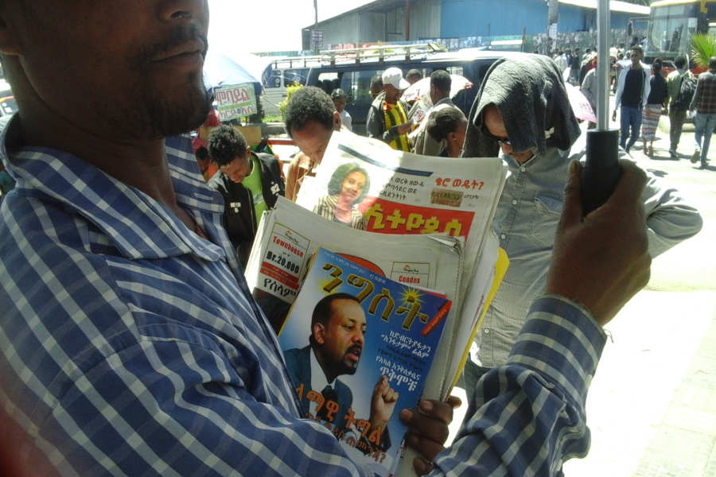
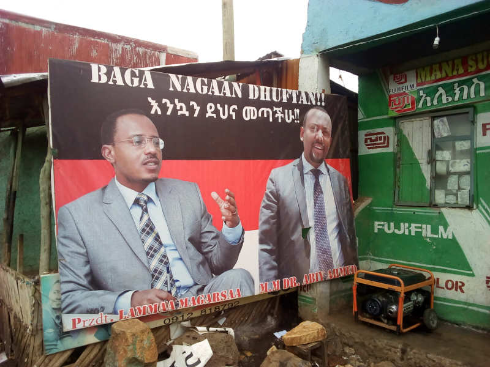

(Nigrizia gennaio 2021 - qui il pdf)
Le speranze fallite di un Premier Nobel
L'Etiopia di Abiy Amhed, il premio nobel per la pace e speranza di tutta una nazione fino a pochi anni fa, vive anni drammatici di guerre militari e campagne d'odio etnico
Testo e foto di Fabio Artoni

Il traghettatore. Il salvatore. Il Nobel. L’amico di Isayas. L’uomo di marketing. Il nuovo Menelik. Il colonizzatore. Quanti i volti del premier?
Nella guerra in Tigray il premier Abiy Amhed ha messo un muro davanti a qualsiasi tipo di consiglio o richiesta di dialogo provenisse dalla comunità internazionale. E al fronte nessuno spazio per osservatori, giornalisti, operatori umanitari. E, quindi, nessuna possibilità di verificare quello che stava succedendo. Sulla questione delle possibili violazioni dei diritti umani e dell’utilizzo della forza militare, aveva già fatto discutere un report di Amnesty International, Beyond Law Enforcement del maggio 2020. Pochi mesi dopo, a settembre, il primo ministro scrisse una lettera all’Economist dove fece capire che per fare rispettare la legge in nome della democrazia occorreva la forza e che questo poteva anche implicare la violazione di diritti umani. Metteva le mani avanti su quegli “effetti collaterali” che accompagnano le dichiarazioni degli stati di emergenza.
La guerra in Tigray contro il Fronte di liberazione del popolo del Tigray – che secondo il premier è la longa manus che sta dietro tutti i tentativi di destabilizzazione dell’Etiopia – è il fronte più recente di una situazione generale di insicurezza nel paese.
In Oromia, dopo l’assassinio – nel giugno 2020 – di un giovane musicista, Hachalu Hundessa, alcune cittadine della Rift Valley diventarono scenari da caccia all’uomo, da pulizia etnica. Le forze di sicurezza cominciarono, poi, un’altra caccia, arrestando migliaia di giovani oromo. Ma le forze dell’esercito erano all’opera anche nel Wellega, nell’ovest, contro l’Esercito di liberazione oromo. E anche il Wellega era off limits, con linee telefoniche e internet tagliate per mesi.
Sono più di due anni che le cronache delle violenze etniche traumatizzano la gente comune. E dalla gente veniva la richiesta di sicurezza. Una delle principali critiche ad Abiy Amhed era di avere scoperchiato un vaso di pandora senza essere in grado di gestirne gli effetti. Il premier ha risposto mostrando i denti e tirando fuori l’uniforme da militare, mantenendo, però, un filo – che appare sempre più fragile – con l’Abiy Amhed prima maniera: quello che nella primavera del 2018 fermò l’Etiopia sul baratro del vuoto di potere, parlando di democrazia e di unità.
Ottenere la «democrazia a tutti i costi», anche con i metodi forti della soluzione militare, non sembra una soluzione realistica. E di solito finisce con un uomo forte al comando. Abiy Amhed rischia di scegliersi o vedersi cucito addosso questo destino.

Villaggio dell'Arsi, Oromia, 2018. Un manifesto di benvenuto in oromo ("baga naga dhuftan") per Abiy Amhed e Lemma Megersa, leader dei giovani oromo ora scomparso dalla scena pubblica
La biografia
Abiy Amhed è nato 44 anni fa in un villaggio dell’Oromia occidentale, da un padre oromo, musulmano, e dalla sua quarta moglie, amhara e cristiana ortodossa. Da adulto, Abiy ha poi scelto il cristianesimo dei pentecostali, della Ethiopian Full Gospel Believers' Church. Ma non è un caso eccezionale quello di questa famiglia. Il “federalismo etnico” ha costruito in Etiopia una gabbia geografica a tutela delle etnie, ma queste non hanno mai smesso di spostarsi, di celebrare nozze e battesimi interetnici e di piangere i morti insieme. In un modo che assomiglia più alla condivisione che alla tolleranza.
Abiy sta per Abiyot, Rivoluzione, ed era un nome comune quando nacque, nel 1976, appena due anni dopo la rivoluzione che tolse dal trono l’imperatore Hailé Selassié e diede la terra ai contadini, prima di diventare la dittatura di Menghistu. Abiy Amhed è diventato adulto e ha costruito la sua carriera prima militare e poi politica dentro la coalizione di partiti, l’Eprdf, che scrisse la Costituzione del 1995 e che governa dal 1991, dopo la cacciata del Negus rosso.
Il premier scelse la carriera militare, nell’intelligence. Visse al fronte la guerra con l’Eritrea e nel 2010 venne eletto parlamentare. Il suo partito era il Partito democratico oromo (Odp). Nell’Eprdf le redini del comando erano saldamente nelle mani dei tigrini del Tplf. Ma c’era bisogno di un sistema capillare di funzionari locali (amhara, oromo, afar, somali…) fino allla più piccola unità amministrativa (kebele). Il Tplf – a meno che la guerra in Tigray non lo resusciti con una lunga guerriglia – con le rivolte popolari era già finito tra le scarpe vecchie della storia dell’Etiopia. Ma gli altri partiti della coalizione, in Oromia e in Amhara soprattutto, non godevano certo di buon credito. Abiy Amhed era considerato uno dei riformisti dell’Eprdf, e quel sistema lo conosceva bene.
I nodi irrisolti di giustizia sociale
Il sistema di potere dell’Eprdf andò in crisi nel 2016. E non tra gli studenti di Addis Abeba. Ma nelle campagne dell’Oromia e dell’Amhara. Quelli che morirono furono centinaia di giovani che certo non avevano la tessera del partito dell’Eprdf in tasca: erano i queeroo oromo, il cui nome ora è associato solo ai vandali; o i fano di Gondar e Bahar Dar. Qualcuno si ricorda di Feyisa Lilesa, il maratoneta che incrociò le braccia a Rio 2016 e portò la causa degli oromo in tutto il mondo? Quella rivolta popolare chiedeva giustizia sociale in un paese che registrava il «più alto aumento di milionari al mondo», ma a spese dei contadini. Grandi temi, irrisolti. La giustizia sociale e il modello di sviluppo dell’Etiopia rimangono i convitati di pietra del futuro del paese. E l’odio etnico è purtroppo la cortina fumogena che li tiene nascosti.
Prima di finire dentro questa cortina fumogena, bisogna dare atto al primo ministro di aver preso una posizione mettendo al centro dell’Etiopia le questione dell’occupazione e dello sviluppo; con una visione di libero mercato diversa dallo “stato sviluppista” precedente. Ma una campagna elettorale su questi temi non esiste nell’Etiopia di oggi. È finita sotto il pantano di focolai di rivolte e di guerra in Tigray.
Un uomo solo al comando
In un ultimo disperato tentativo di fermare il caos, l’Eprdf scelse Abiy Amhed come nuovo premier. Il patto con gli oromo era che “traghettasse” il paese verso elezioni libere. Ma Abiy divenne, non suo malgrado, il “Salvatore”. Parlando di feker, amore, ha vissuto e fatto vivere all’Etiopia dei veri giorni di gloria. Il suo discorso inaugurale da premier, il 2 aprile del 2018, è da rileggere perché aveva “sospeso” il caos. Se c’è una speranza oggi per l’Etiopia in guerra è pensare alla maggioranza silenziosa in tutto il paese che ha voluto credere che il dialogo e la libertà di espressione fossero strumenti per costruire la pace.
Da allora in poi Abiy ha agito da uomo solo al comando e in fuga. Con protagonismo e fretta, dicono i suoi critici. Ha denunciato la corruzione e lo stato di polizia, picconando le posizioni al vertice del potere dei tigrini del Tplf, dall’esercito fino agli imprenditori. Ha subito un attentato in una piazza gremita e un tentativo di colpo di stato. Ha liberato giornalisti e prigionieri politici e ha accolto in patria dalla clandestinità ideologhi e guerriglieri etnonazionalisti del Fronte di liberazione oromo e gli unionisti del Ginbot 7. E quel giorno ad Addis Abeba, che doveva simboleggiare l’apertura alle più varie rappresentanze politiche, divenne il primo giorno della pulizia etnica, con un massacro alla periferia della città.
Abiy si dedicò a progetti che i critici videro come protagonismo fatto più di fumo che di arrosto. Organizzò per i super ricchi d’Etiopia una cena di raccolta fondi dal costo milionario per finanziare la “bellezza” di Addis Abeba, perché, come disse «se si può cambiare Addis Abeba si può cambiare l’Etiopia».
Sapeva certo di pura apparenza anche la proclamazione del famoso giorno della riforestazione (28 luglio 2019), con tutto il paese impegnato a piantare milioni di germogli. Un exploit forse valido per sensibilizzare, ma non certo dall’impatto duraturo.
Vedendolo sfrecciare così sicuro, a Stoccolma gli hanno dato il Nobel nel 2019, per la pace con l’Eritrea. Il Doctor Abiy ha preso la statuetta, ma Isaias Afeworki ha vinto un terno al lotto insperato, recuperato in extremis nel consesso dei presidenti presentabili, in quello stato blindato che è ancora l’Eritrea.
Una libreria di Addis Abeba. La libertà di stampa è stato un importante gesto riformista nell'Etiopia di Abiy Amhed, dopo gli anni di severa censura dell'Eprdf guidato dai tigrini. Ma la situazione, in tempi di guerra con il Tigray e di conflitti etnici, è peggiorata con arresti ed espulsioni di giornalisti etiopi e stranieri
Le “iene di giorno”
Con le riforme in pieno corso, l’Etiopia andò presto fuori controllo. Il primo ministro identificò quelli che volevano fare deragliare le riforme con l’epiteto di ieken gibocc, iene di giorno. Tradotto: i burattinai che spargevano discorsi d’odio, pagavano giovani violenti e manipolabili delle campagne per farli diventare vandali e giustizieri, armavano piccole etnie con dei conti in sospeso con altre etnie.
Per arrivare ai ferri corti con le iene, Abiy non ha certo guardato alla sua metà oromo, il patrimonio genetico che lo ha aiutato a farsi accettare dagli oromo come premier, nella primavera del 2018. Ha arrestato Jawar Mohamed e Bekele Gerba, che non vivevano in clandestinità nella giungla, ma erano esponenti di un vasta coalizione di partiti oromo, che si sarebbero dovuti presentare alle elezioni.
A parte le “iene di giorno”, anche un leader come Lemma Megersa è sparito. Giovane come Abiy, riformista, suo compagno di partito e talmente oromo da essere il presidente dell’Oromia, Lemma è l’uomo che ad aprile del 2018 sembrava dover diventare il futuro premier. Esisteva un “team Lemma”, di cui Abiy Ammhed faceva parte, e non il contrario. Quando Abiy, nel novembre del 2019, presentò, accelerando come gli è spesso capitato, il Partito della Prosperità, un partito unico senza radici etniche, gli oromo devono essersi chiesti: «Ma come, proprio ora che era il nostro turno?». Lemma disse pubblicamente che quella di Abiy non gli sembrava una buona idea. Qualche mese dopo, è stato destituito da ministro della difesa e di lui ora si sa poco.
Pensando al futuro, a delle elezioni democratiche, è un dramma sapere che il grande gruppo etnolinguistico degli oromo è di nuovo senza capi carismatici; con il rischio che i giovani finiscano, nelle milizie armate. Un cattivo servizio alla causa oromo e alla rappresentatività democratica.
Un mondo in bianco e nero
Osservando il dibattito pubblico in Etiopia, Abiy Amhed, il leader del medemer (del «costruire insieme»), è finito in un mondo in bianco e nero molto più antico di lui: da una parte il pan-etiopismo degli unionisti e dall’altro i gruppi degli etnonazionalisti. Un mondo fatto di simboli. Lo è Hailé Selassié, tanto che gli unionisti amhara sono chiamati spregiativamente “neftegna”, dal nome dei fucilieri amhara che esigevano le tasse sul lavoro dei contadini. E ancor di più Menelik II. Per gli unionisti è l’uomo della vittoria di Adwa e della prima formazione dell’impero, con la campagna militare di conquista dei popoli del sud. Per gli etnonazionalisti, invece, è l’artefice della colonizzazione e dell’annientamento culturale degli oromo e della oromicità. Quando tutto è simbolo si capisce perché ad Addis Abeba i giovani oromo volevano abbattere la statua dell’imperatore a cavallo. Oppure perché è stata letta come una voglia di grandeur di Abiy Amhed l’avere ristrutturato il ghebì (cortile) imperiale.
Nel rimescolamento di carte degli ultimi anni si vede che c’è un uomo (Abiy), cresciuto nella coalizione di partiti che ha governato per 25 anni, stare in guerra con quello che è stato il partito guida di quella coalizione. Si vedono gli etnonazionalisti oromo (dagli integralisti ai riformisti) entrare in collisione con l’uomo che avevano sostenuto (sempre Abiy). E, infine, gli unionisti amhara, che dal Partito della Prosperità fino alla guerra ai cugini tigrini, sembrano avere trovato un nuovo leader, “neoneftegna” dicono gli avversari.
E una domanda cruciale infine. Abiy Amhed ci si è ritrovato suo malgrado nei panni dell’uomo forte dell’Etiopia unita o si sta ritagliando quel vestito su misura per lui?